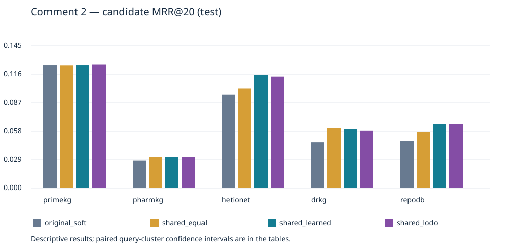

CPU: complete; E2E: complete

| dataset | variant | gold_at20 | mrr_at20 | hits1 | hits10 | delta_mrr | ci95_low | ci95_high |
|---|---|---|---|---|---|---|---|---|
| primekg | raw | 0.240000 | 0.064563 | 0.024000 | 0.192000 | -0.060763 | -0.077806 | -0.045526 |
| primekg | original_soft | 0.240000 | 0.125326 | 0.072000 | 0.222000 | 0 | 0 | 0 |
| primekg | native_fixed_b050 | 0.240000 | 0.125326 | 0.072000 | 0.222000 | 0 | 0 | 0 |
| primekg | native_valid_grid | 0.240000 | 0.125326 | 0.072000 | 0.222000 | 0 | 0 | 0 |
| primekg | shared_equal | 0.240000 | 0.125188 | 0.072000 | 0.222000 | -0.000138 | -0.000446 | 0.000132 |
| primekg | shared_learned | 0.240000 | 0.125326 | 0.072000 | 0.222000 | 0 | 0 | 0 |
| pharmkg | raw | 0.092000 | 0.020481 | 0.008000 | 0.046000 | -0.007678 | -0.011991 | -0.003960 |
| pharmkg | original_soft | 0.092000 | 0.028159 | 0.012000 | 0.068000 | 0 | 0 | 0 |
| pharmkg | native_fixed_b050 | 0.092000 | 0.028159 | 0.012000 | 0.068000 | 0 | 0 | 0 |
| pharmkg | native_valid_grid | 0.092000 | 0.028159 | 0.012000 | 0.068000 | 0 | 0 | 0 |
| pharmkg | shared_equal | 0.092000 | 0.031883 | 0.016000 | 0.072000 | 0.003724 | -0.001329 | 0.009456 |
| pharmkg | shared_learned | 0.092000 | 0.031876 | 0.016000 | 0.072000 | 0.003716 | -0.001327 | 0.009477 |
| hetionet | raw | 0.440000 | 0.099445 | 0.040000 | 0.220000 | 0.004007 | -0.026481 | 0.039763 |
| hetionet | original_soft | 0.440000 | 0.095439 | 0.010000 | 0.280000 | 0 | 0 | 0 |
| hetionet | native_fixed_b050 | 0.440000 | 0.095439 | 0.010000 | 0.280000 | 0 | 0 | 0 |
| hetionet | native_valid_grid | 0.440000 | 0.095439 | 0.010000 | 0.280000 | 0 | 0 | 0 |
| hetionet | shared_equal | 0.440000 | 0.101269 | 0.030000 | 0.210000 | 0.005830 | -0.027553 | 0.043339 |
| hetionet | shared_learned | 0.440000 | 0.115284 | 0.040000 | 0.260000 | 0.019845 | -0.011858 | 0.056340 |
| drkg | raw | 0.200000 | 0.043242 | 0.010000 | 0.120000 | -0.003314 | -0.007915 | 0.000201 |
| drkg | original_soft | 0.200000 | 0.046556 | 0.014000 | 0.142000 | 0 | 0 | 0 |
| drkg | native_fixed_b050 | 0.200000 | 0.039818 | 0.016000 | 0.120000 | -0.006738 | -0.017205 | 0.004602 |
| drkg | native_valid_grid | 0.200000 | 0.046516 | 0.014000 | 0.136000 | -0.000040 | -0.001234 | 0.001011 |
| drkg | shared_equal | 0.200000 | 0.061426 | 0.032000 | 0.122000 | 0.014870 | 0.004181 | 0.026357 |
| drkg | shared_learned | 0.200000 | 0.060496 | 0.030000 | 0.136000 | 0.013940 | 0.003056 | 0.025973 |
| repodb | raw | 0.214000 | 0.048140 | 0.018000 | 0.128000 | 0.000033 | 0 | 0.000075 |
| repodb | original_soft | 0.214000 | 0.048107 | 0.018000 | 0.128000 | 0 | 0 | 0 |
| repodb | native_fixed_b050 | 0.214000 | 0.027763 | 0.004000 | 0.114000 | -0.020343 | -0.029339 | -0.012510 |
| repodb | native_valid_grid | 0.214000 | 0.048140 | 0.018000 | 0.128000 | 0.000033 | 0 | 0.000075 |
| repodb | shared_equal | 0.214000 | 0.057366 | 0.014000 | 0.126000 | 0.009259 | 0.000860 | 0.017724 |
| repodb | shared_learned | 0.214000 | 0.064902 | 0.018000 | 0.160000 | 0.016795 | 0.011522 | 0.022452 |
| primekg | shared_lodo | 0.240000 | 0.126104 | 0.074000 | 0.220000 | 0.000778 | -0.001127 | 0.003811 |
| pharmkg | shared_lodo | 0.092000 | 0.031860 | 0.016000 | 0.072000 | 0.003701 | -0.001343 | 0.009463 |
| hetionet | shared_lodo | 0.440000 | 0.113579 | 0.040000 | 0.240000 | 0.018141 | -0.013817 | 0.054942 |
| drkg | shared_lodo | 0.200000 | 0.058612 | 0.028000 | 0.128000 | 0.012056 | 0.000227 | 0.024389 |
| repodb | shared_lodo | 0.214000 | 0.064902 | 0.018000 | 0.160000 | 0.016795 | 0.011522 | 0.022452 |
| dataset | arm | variant | n | exact_match | invalid | adjusted_rr |
|---|---|---|---|---|---|---|
| primekg | candidate | raw | 500 | 0.002000 | 0.020000 | 0.047636 |
| primekg | candidate | original_soft | 500 | 0 | 0.020000 | 0.074676 |
| primekg | candidate | native_valid_grid | 500 | 0 | 0.020000 | 0.074609 |
| primekg | candidate | shared_equal | 500 | 0 | 0.020000 | 0.074686 |
| primekg | candidate | shared_learned | 500 | 0 | 0.020000 | 0.074609 |
| primekg | candidate | shared_lodo | 500 | 0 | 0.020000 | 0.074775 |
| primekg | graph | source_graph | 500 | 0 | 0.020000 | 0.074676 |
| primekg | graph | original_fuzzy | 500 | 0 | 0.002000 | 0.074687 |
| primekg | graph | shared_fixed | 500 | 0 | 0.002000 | 0.074687 |
| primekg | graph | shared_auto | 500 | 0 | 0.002000 | 0.074742 |
| primekg | graph | shared_edge_lodo | 500 | 0 | 0.002000 | 0.074687 |
| pharmkg | candidate | raw | 500 | 0 | 0.490000 | 0.015575 |
| pharmkg | candidate | original_soft | 500 | 0 | 0.610000 | 0.020587 |
| pharmkg | candidate | native_valid_grid | 500 | 0 | 0.610000 | 0.020587 |
| pharmkg | candidate | shared_equal | 500 | 0.002000 | 0.688000 | 0.022808 |
| pharmkg | candidate | shared_learned | 500 | 0.002000 | 0.692000 | 0.022805 |
| pharmkg | candidate | shared_lodo | 500 | 0.002000 | 0.690000 | 0.022793 |
| pharmkg | graph | source_graph | 500 | 0 | 0.610000 | 0.020587 |
| pharmkg | graph | original_fuzzy | 500 | 0.002000 | 0.588000 | 0.020971 |
| pharmkg | graph | shared_fixed | 500 | 0.002000 | 0.574000 | 0.021290 |
| pharmkg | graph | shared_auto | 500 | 0.002000 | 0.574000 | 0.021290 |
| pharmkg | graph | shared_edge_lodo | 500 | 0.002000 | 0.578000 | 0.021290 |
| hetionet | candidate | raw | 100 | 0.020000 | 0.020000 | 0.081690 |
| hetionet | candidate | original_soft | 100 | 0.030000 | 0.020000 | 0.100087 |
| hetionet | candidate | native_valid_grid | 100 | 0.030000 | 0.020000 | 0.100087 |
| hetionet | candidate | shared_equal | 100 | 0.010000 | 0.040000 | 0.078342 |
| hetionet | candidate | shared_learned | 100 | 0.010000 | 0.020000 | 0.085784 |
| hetionet | candidate | shared_lodo | 100 | 0.020000 | 0.020000 | 0.091936 |
| hetionet | graph | source_graph | 100 | 0.030000 | 0.020000 | 0.100087 |
| hetionet | graph | original_fuzzy | 100 | 0.030000 | 0.020000 | 0.100087 |
| hetionet | graph | shared_fixed | 100 | 0.030000 | 0.020000 | 0.100087 |
| hetionet | graph | shared_auto | 100 | 0.030000 | 0.020000 | 0.100087 |
| hetionet | graph | shared_edge_lodo | 100 | 0.030000 | 0.020000 | 0.100087 |
| drkg | candidate | raw | 500 | 0.010000 | 0 | 0.040954 |
| drkg | candidate | original_soft | 500 | 0.014000 | 0 | 0.046285 |
| drkg | candidate | native_valid_grid | 500 | 0.014000 | 0 | 0.046365 |
| drkg | candidate | shared_equal | 500 | 0.008000 | 0 | 0.046767 |
| drkg | candidate | shared_learned | 500 | 0.020000 | 0 | 0.057786 |
| drkg | candidate | shared_lodo | 500 | 0.018000 | 0 | 0.054981 |
| drkg | graph | source_graph | 500 | 0.014000 | 0 | 0.046285 |
| drkg | graph | original_fuzzy | 500 | 0.014000 | 0 | 0.046285 |
| drkg | graph | shared_fixed | 500 | 0.014000 | 0 | 0.046285 |
| drkg | graph | shared_auto | 500 | 0.014000 | 0 | 0.046285 |
| drkg | graph | shared_edge_lodo | 500 | 0.014000 | 0 | 0.046285 |
| repodb | candidate | raw | 500 | 0.002000 | 0 | 0.036642 |
| repodb | candidate | original_soft | 500 | 0.002000 | 0 | 0.036623 |
| repodb | candidate | native_valid_grid | 500 | 0.002000 | 0 | 0.036642 |
| repodb | candidate | shared_equal | 500 | 0.008000 | 0 | 0.046601 |
| repodb | candidate | shared_learned | 500 | 0 | 0 | 0.043996 |
| repodb | candidate | shared_lodo | 500 | 0 | 0 | 0.043996 |
| repodb | graph | source_graph | 500 | 0.002000 | 0 | 0.036642 |
| repodb | graph | original_fuzzy | 500 | 0.004000 | 0 | 0.037776 |
| repodb | graph | shared_fixed | 500 | 0.004000 | 0 | 0.037795 |
| repodb | graph | shared_auto | 500 | 0.004000 | 0 | 0.037795 |
| repodb | graph | shared_edge_lodo | 500 | 0.004000 | 0 | 0.038045 |
See REPORT.md for uncertainty, protocol and interpretation limits.